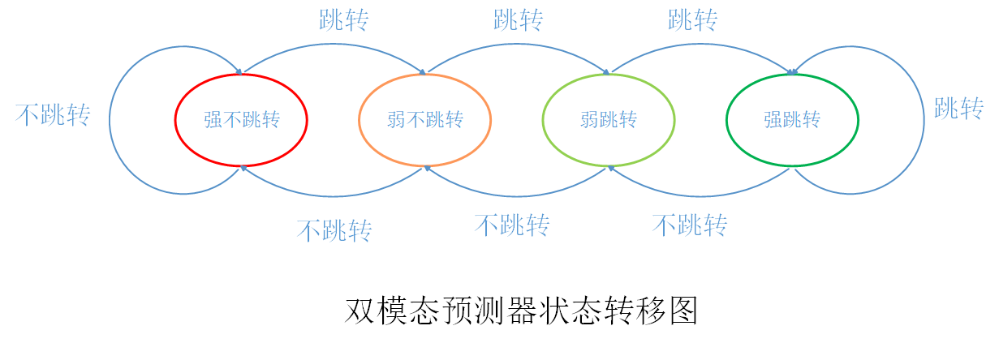
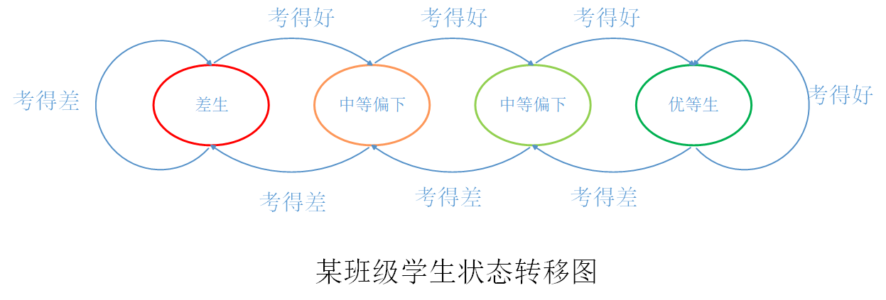

C++性能榨汁机之分支预测器(2)
前言
在上篇文章中，我们介绍了分支预测器在提高CPU流水线效率上的重要作用，上篇文章最后还提到，分支预测器的预测准确率对CPU执行命令效率有巨大影响，当预测错误时必须将流水线冲刷，然后重新从正确的地址取指，分支预测错误将会产生很大的代价，而且这种代价随着流水线的深度的增加而快速增长。
过去几十年，国内外科研界及工业界提出了多种分支预测模型以提高分支预测的准确率，本篇文章，我们主要挑选部分典型的分支预测模型，探究其分支预测算法。
根据分支预测器利用的信息可以将分支预测器分为静态分支预测器和动态分支预测器。静态分支预测器主要利用静态分支的信息或编译器提供的信息对分支方向进行预测，而动态分支预测器除了利用上述信息外，还会在程序执行过程中动态收集分支历史跳转等信息进行预测。
静态预测
静态分支预测器一般实现比较简单，在类似于嵌入式处理器这种资源较少的处理器中应用比较多，但是因为静态预测器实现逻辑比较简单，所以预测准确率相应一半也不高。
静态分支预测器的实现算法主要有下面这几种：
所有的分支指令都不跳转，每次CPU都顺序取出下一条命令放入流水线。
所有的分支指令都跳转，每次CPU遇到分支判断指令都默认会发生跳转，并从跳转地址取指。
某些指令一律跳转，某些指令一律不跳转，此方法是方法1和方法2的结合。
与上次跳转结果保持一致，比如，上次该指令发生了跳转，那么本次依旧跳转，如果上次该指令没有跳转，则本次也不跳转。
向前的分支会跳转，向后的分支不跳转。该方法主要针对程序中的循环进行的优化。
虽然看似在概率上，这些静态方法的预测正确率只有50%，但是由于一般程序中都有大量循环存在，针对循环优化的静态方法一般都有高于70%的正确率。
对于哪些对于预测准确率要求不算太高，且本身资源有限制或者对功耗要求高的场景，静态分支预测器是一个很好的选择。
动态预测
静态预测70%的准确率虽然看似不低，但是对于拥有非常深流水线的现代处理器，30%的错误率会导致流水线被频繁冲刷（flush），对CPU效率的影响是巨大的。因此，为了进一步提高分支预测器的预测准确度，人们开始研究更为复杂的动态分支预测器。
动态分支预测中最简单的方法就是双模态预测器（bimodal predictor），该预测器采用4个状态的状态机对分支跳转进行预测，分支指令执行完毕后根据实际跳转结果更新状态机，用于下次预测，状态机大体流程如下：

看状态机机的状态跳转可能不太好理解互相之间的关系，那我们用通俗一点的话来解释一下。想象这么一个场景：在遥远的地方有这么一个班级，为了区分学生优差，按照学习成绩将学生分为了4类：
- 优等生（强跳转）
- 中等偏上（弱跳转）
- 中等偏下（弱不跳转）
- 差生（强不跳转）
学生的等级就靠每次考试成绩区分，考试成绩分为两类：考得好（跳转）、考得差（不跳转），等级按如下规则变化：
- 优等生考的好还是优等生，考的差变为中等偏上。
- 中等偏上考得好变成优等生，考得差变为中等偏下。
- 中等偏下考得好变为中等偏上，考得差变为差生。
- 差生考得差还是差生，考得好变为中等偏下。
其中，我们优等生和中等偏上学生我们认为是好学生（预测他下次会考得好），差生和中等偏下学生我们认为是坏学生（预测他下次会考得差）。
这个班级学生状态变化如下图所示：

当然上面这个班级的例子只是想象出来解释双模态预测器的，我们反对这种将学生只按学习成绩划分三六九等的方法。但上述例子基本原理与双模态预测器的原理是相同的，不知道有没有让读者对双模态预测器了解更透彻一点。
总结
上述双模态预测器的预测准确度相对于静态预测器已经有了极大的提高，预测准确度基本可以达到90%以上。但是人们追求分支预测器准确度的脚步是不会停的，后面发展出了两级自适应预测器、局部/全局分支预测器、融合分支预测器、神经分支预测器等等动态分支预测器，将预测准确度进一步提高，此处限于篇幅就不再详细解释了。
这两篇文章解释了分支预测器的意义及常见的简单实现方法，下一篇文章，我将会就分支预测器对我们写程序的指导意义做一些简单的测试与阐述。